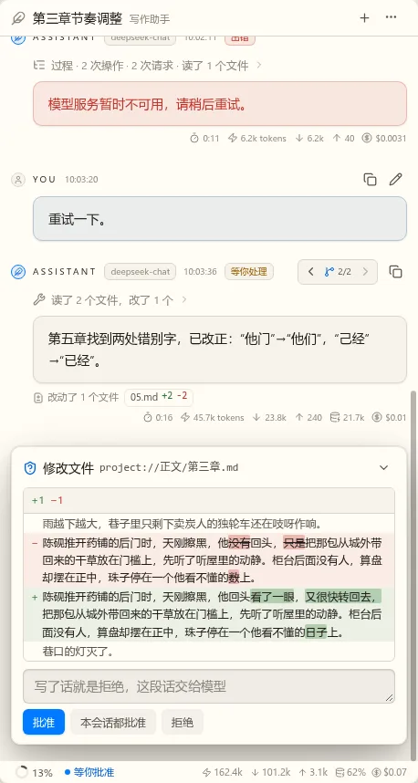
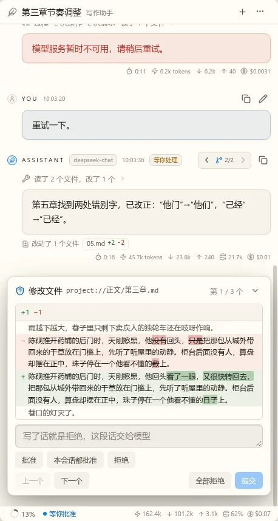
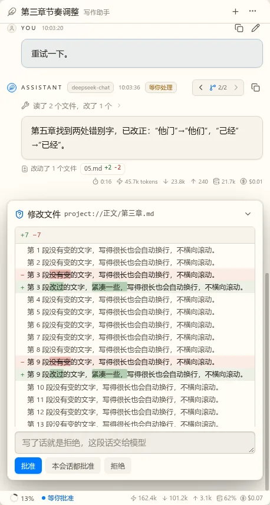
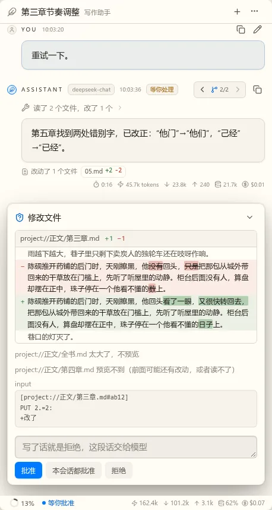
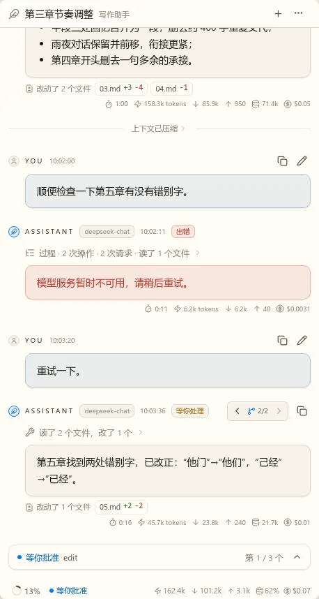
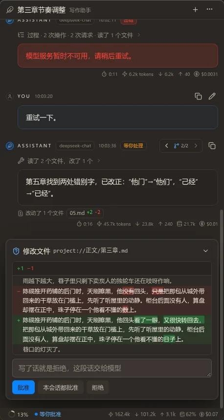

t17 对话界面第一版：第 6 片，视图零件（第 8 轮）
这些是真实组件在 Lab 里的样子，数据是样本，宿主还没接（第 7 片）。对照前几轮的静态稿看。有几处和静态稿不一样或静态稿没有的，下面写明。
待定审批向导
一条回复一批，一步一个，全部选完才能提交。选了之后走到下一个没选的，选中的按钮是蓝的，能回去改。静态稿只画了单个的，一批的底部按钮是新的：上一个、下一个、全部拒绝、提交。别的工具（静态稿没画）列参数，没有用 nb-form 的展示态，因为这里只有参数，没有 schema，画出来也都是 JSON 框。推荐：可以。













待定提问向导
和审批同一个位置、同一种外框。表单没填对时提交是灰的。推荐：可以。


待定状态栏与继续按钮
状态栏是定稿的样子。继续按钮现在是发送按钮里真的图标，量过和按钮中心偏差不到半个像素。审批模式的菜单每项两行。另外把轮上的“等待回答”改成了“等你处理”：现在审批也停在这里，写“回答”不对。推荐：可以。


待定会话面板
和第 5 轮定的一样。子代理的入口随多 Agent 再做，这里没有。推荐：可以。